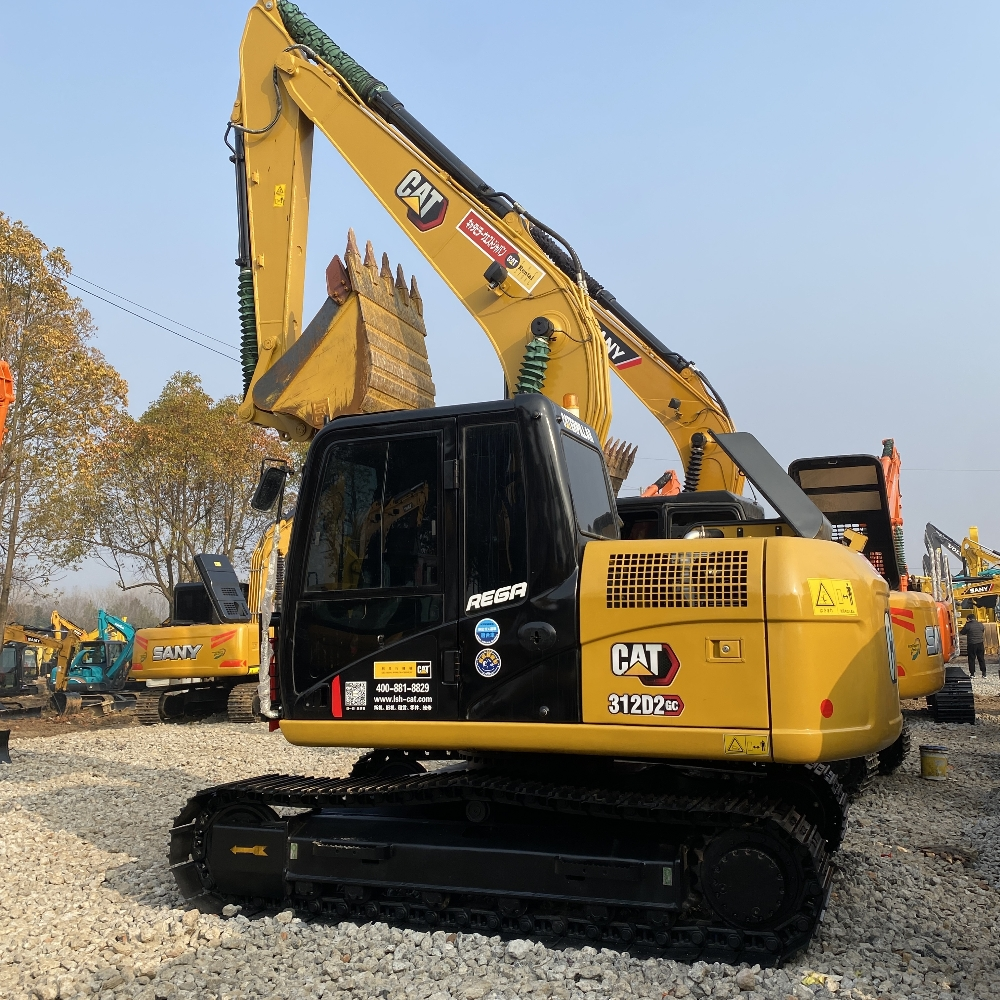

Refurbished Caterpillar Cat 312 Excavator
The Caterpillar Cat 312 Excavator is a powerful and versatile machine widely used in the construction, demolition, and landscaping industries. Known for its compact size, excellent fuel efficiency, and high-performance hydraulics, the Cat 312 is an ideal choice for operators who need a reliable machine that can handle a range of tasks. A refurbished Cat 312 provides the same outstanding capabilities as a new model but at a more affordable price, making it a smart investment for businesses and contractors.
Honestly, it's almost impossible to buy a brand new excavator from China. They either don't exist or are made in China. If a Chinese seller tells you their Caterpillar/Komatsu/Volvo/Kobelco/Hitachi is brand new, they're lying. Therefore, a refurbished excavator is your best bet.

Here are the detailed specifications for a refurbished Caterpillar Cat 312C excavator:
Operating Weight and Dimensions
- Operating Weight: ~12,650 kg (27,910 lbs)
- Transport Length: ~7.6 meters (24 ft 11 in)
- Transport Width: ~2.49 meters (8 ft 2 in)
- Transport Height: ~2.77 meters (9 ft 1 in)
- Tail Swing Radius: ~2.3–2.5 meters
- Track Width: 500 mm standard
Engine and Powertrain
- Engine Model: Cat 3064T (Turbocharged, Tier 2 compliant)
- Rated Power Output: ~67–72 kW (90–97 hp) @ 2,200 rpm
- Torque Rise: High torque rise at mid-RPM for heavy-duty response
- Fuel Tank Capacity: ~250 liters
- Travel Speed: 3.0–5.0 km/h
- Swing Speed: ~11 rpm
Hydraulic System
- Pump Type: Open-center, two-pump load-sensing system
- Flow Rate: ~2 × 180–200 L/min
- System Pressure: Up to 31.5 MPa
- Efficiency Features:
- Hydraulic cross-sensing system
- Automatic boom and swing priority
- Shorter tubing layout to reduce friction loss
Performance Metrics
- Bucket Capacity: 0.5–0.7 m³ (SAE heaped)
- Max Digging Depth: ~5.5–5.8 meters
- Max Reach (Horizontal): ~8.5–9.0 meters
- Max Dump Height: ~5.6–5.8 meters
- Bucket Digging Force: ~100–110 kN
- Arm Digging Force: ~75–85 kN
Cab and Operator Features
- Cab Type: ROPS-certified enclosed cab
- Display: Analog gauges or basic LCD monitor
- Controls: Pilot-operated joysticks with auxiliary hydraulic circuit
- Comfort: Adjustable seat, optional HVAC
- Visibility: Wide glass area, LED work lights
Smart Features and Efficiency
- Fuel Efficiency:
- Mechanical fuel injection
- Auto idle and engine shutdown
- Emissions Control: Tier 2 compliant (no DPF/SCR)
- Transportability: Easily trailerable under 13-ton class
Attachments Compatibility
- Standard Bucket: 0.5–0.7 m³
- Optional Tools: Hydraulic breaker, auger, compactor, ripper
- Quick Coupler: Manual or hydraulic options available
Refurbishment Scope
Refurbished Cat 312 units typically include:
- Engine Overhaul: Turbocharger, injectors, cooling system
- Hydraulic Restoration: Pump recalibration, valve block testing, hose replacement
- Electrical Diagnostics: Monitor, sensors, wiring harness
- Cab Reconditioning: Seat, joysticks, HVAC, repainting
- Structural Repairs: Boom/bucket welding, bushing replacement, undercarriage rebuild
Overview of the Caterpillar Cat 312 Excavator
The Caterpillar Cat 312 is a mid-size, tracked hydraulic excavator designed for efficiency, durability, and precision. Whether you need to dig trenches, move materials, or perform grading work, the Cat 312 excels in all these areas and more. Its compact design makes it easy to operate in confined spaces while still offering impressive digging depth and reach. With its powerful engine, robust hydraulics, and versatile capabilities, it is the perfect machine for small to medium-sized construction projects.
Refurbished Cat 312 excavators undergo a thorough reconditioning process, where worn parts are replaced, and the machine is brought back to factory specifications. This ensures the equipment is reliable, efficient, and ready for years of service, while providing substantial cost savings compared to buying a brand-new unit.
Key Specifications of the Caterpillar Cat 312 Excavator
The Caterpillar Cat 312 comes with a range of features and specifications that make it a popular choice in the industry:
-
Operating Weight: Approximately 11,000 - 12,000 kg (24,000 - 26,400 lbs)
-
Engine Power: Around 75 - 85 hp (56 - 63 kW)
-
Max Digging Depth: Up to 5.9 meters (19 feet)
-
Maximum Reach: About 8 meters (26 feet)
-
Bucket Capacity: Typically 0.5 - 1.0 cubic meters (18 - 35 cubic feet)
-
Fuel Tank Capacity: Around 150 - 200 liters (39 - 53 gallons)
-
Travel Speed: Up to 5.4 km/h (3.4 mph)
These specifications give the Cat 312 the versatility to handle a range of tasks, from small excavation jobs to larger-scale projects.
Performance and Efficiency of the Cat 312
The Cat 312 is designed to provide optimal performance while maximizing fuel efficiency. Its powerful engine and efficient hydraulic system ensure smooth operation and quick cycle times, making it an excellent choice for digging, lifting, and material handling.
Performance Highlights:
-
Powerful Hydraulics: The Cat 312 comes equipped with a highly efficient hydraulic system that enables smooth, precise control of the boom, arm, and bucket. This system allows for faster cycle times and increased productivity, especially when working with tough soil or handling heavy materials.
-
Fuel Efficiency: One of the standout features of the Cat 312 is its fuel-efficient engine. Designed to reduce fuel consumption without sacrificing power, the Cat 312 helps businesses save on operational costs while maintaining high productivity levels.
-
Digging and Lifting Power: With its robust hydraulics and powerful engine, the Cat 312 is capable of handling tough digging and lifting tasks. Its impressive digging depth and reach make it suitable for various applications, including trenching, foundation digging, and material handling.
-
Precision Control: The Cat 312 offers precise control for operators, allowing them to work in tight spaces or execute delicate tasks with confidence. The responsive controls and smooth operation make it easy to perform tasks accurately, improving overall efficiency.
Durability and Longevity of the Cat 312
Caterpillar equipment is known for its durability and reliability, and the Cat 312 is no exception. Built with high-quality materials and engineered for long-term performance, this excavator can withstand the demands of tough working conditions.
Durability Features:
-
Reinforced Undercarriage: The Cat 312 features a durable undercarriage designed to handle rough terrain and heavy loads. The tracks, rollers, and sprockets are built to last, ensuring that the machine can operate smoothly even on uneven ground.
-
Long-Lasting Engine: The Cat 312 is powered by a reliable engine designed for longevity. With regular maintenance, this engine can provide thousands of hours of efficient performance, making it an excellent investment for businesses.
-
Hydraulic System Durability: The hydraulic system of the Cat 312 is designed to withstand high pressures and perform reliably over the long term. The machine’s hydraulic components are built for durability, ensuring minimal downtime due to system failures.
Comfort and Safety of the Cat 312
Safety and operator comfort are top priorities in the design of the Cat 312. The excavator is equipped with a spacious operator cabin that provides excellent visibility and comfort for long work hours.
Comfort and Safety Features:
-
Spacious and Ergonomic Cabin: The Cat 312 offers a spacious operator cabin with adjustable seating and controls designed to reduce operator fatigue. The cabin is designed to provide clear visibility of the work area, allowing the operator to maneuver the machine with ease and precision.
-
Noise and Vibration Reduction: The cabin is designed to reduce noise and vibration, providing a quieter and more comfortable environment for the operator. This feature is particularly beneficial during long working hours, helping operators maintain focus and productivity.
-
Safety Features: The Cat 312 is equipped with several safety features, including rollover protection (ROPS) and falling object protection (FOPS) to safeguard the operator in hazardous work environments. The machine also has a stable and sturdy base, which enhances its overall safety when working on uneven terrain.
Versatility and Attachments for the Cat 312
The Cat 312 can be fitted with a variety of attachments, making it suitable for a wide range of tasks. Whether you need to dig trenches, lift materials, or perform demolition, the Cat 312 can be equipped with the right tools for the job.
Common Attachments for the Cat 312:
-
Buckets: The Cat 312 can be equipped with general-purpose, heavy-duty, or grading buckets, depending on the application. Bucket capacity typically ranges from 0.5 - 1.0 cubic meters (18 - 35 cubic feet), allowing for efficient material handling.
-
Hydraulic Breakers: For demolition work, the Cat 312 can be fitted with a hydraulic breaker, allowing it to break concrete, rock, and other tough materials with ease.
-
Augers: Auger attachments can be used for digging precise holes for foundations, posts, or other applications that require deep, narrow holes.
-
Grapples: For material handling, the Cat 312 can be equipped with grapple attachments to lift and move logs, scrap metal, or debris efficiently.
-
Quick Couplers: Quick couplers allow operators to quickly switch between attachments, minimizing downtime and boosting productivity.
Benefits of Purchasing a Refurbished Caterpillar Cat 312 Excavator
Buying a refurbished Cat 312 excavator provides several advantages over purchasing a new machine, especially for businesses with budget constraints.
Key Benefits:
-
Cost Savings: Refurbished Cat 312 machines are significantly more affordable than new models, providing a cost-effective solution without compromising performance. Refurbishment brings the machine back to near-new condition, offering a great return on investment.
-
Thorough Inspection and Reconditioning: Refurbished Cat 312 excavators undergo a thorough inspection and reconditioning process, ensuring that they meet or exceed the original factory specifications. All worn parts are replaced with genuine Caterpillar components, ensuring that the machine is reliable and ready to perform.
-
Warranty: Many refurbished Cat 312 machines come with a warranty, providing peace of mind for buyers in case of any unexpected mechanical issues. This warranty ensures that the machine will continue to perform well after purchase.
-
Sustainability: Purchasing refurbished equipment is an environmentally friendly choice. It helps reduce waste and extend the life of existing machinery, contributing to sustainability in the heavy equipment industry.
Maintenance Tips for the Caterpillar Cat 312 Excavator
To ensure that the Cat 312 continues to perform at its best, regular maintenance is essential. Performing routine inspections and addressing potential issues early can help prevent costly repairs and extend the life of the machine.
Maintenance Recommendations:
-
Engine Maintenance: Regularly check and change the engine oil, replace air filters, and monitor coolant levels to prevent overheating and maintain optimal engine performance.
-
Hydraulic System: Inspect hydraulic hoses for leaks and replace hydraulic filters as necessary. Keeping the hydraulic system clean and in good working order ensures efficient performance.
-
Undercarriage: Inspect the undercarriage regularly for signs of wear. Replace damaged tracks, sprockets, and rollers to prevent further damage and ensure smooth operation.
-
Attachments: Inspect attachments like buckets, grapples, and augers for wear and tear. Regularly replace or repair damaged parts to maintain attachment functionality.
Conclusion
The Caterpillar Cat 312 Excavator is a versatile and reliable machine that offers excellent performance, fuel efficiency, and durability. Purchasing a refurbished model provides an affordable alternative to buying new equipment while still offering high-quality performance and long-term reliability. With the right maintenance, the Cat 312 can continue to serve operators for many years, making it a smart choice for any construction or landscaping business.
Our Commitment
- 2 years / 4000 hours warranty.
- EPA certified.
- No sweatshop labor.
Contacts

- [email protected]
- Youtube Instagram Facebook
- Navigation: G206 (Sishu Bridge) in Changfeng County, Hefei City, Anhui Province, 200 meters north to the east